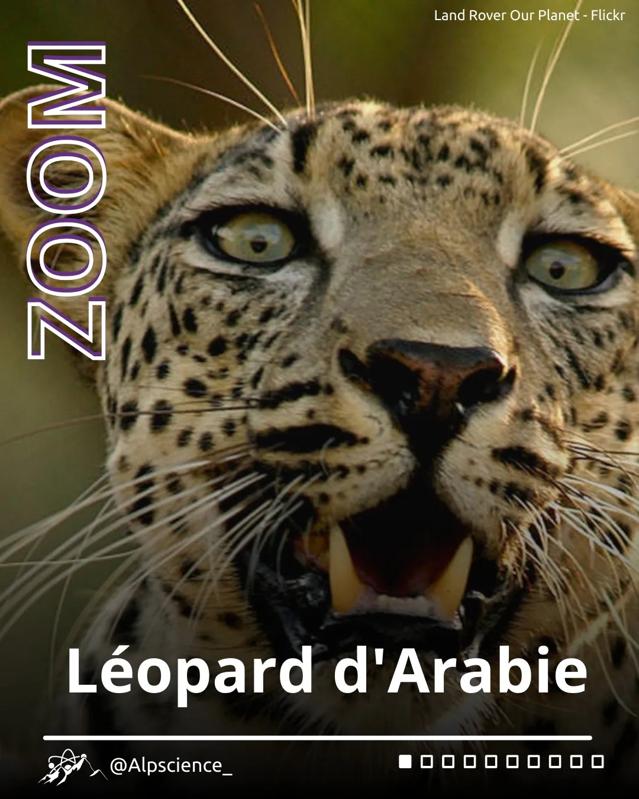

Passionné de sciences depuis tout petit, je suis tombé amoureux de la physique, de la minéralogie et des araignées ! Pour moi, les sciences sont plus qu'une matière enseignée à l'école : c'est une méthode, une manière de voir le monde et d'envisager notre rapport aux autres. Il y a toujours de nouvelles choses à découvrir.
La médiation m'a appris à voir les sciences d'un autre œil, à me mettre à la place des différents publics et à me demander comment transmettre au mieux ma passion. C'est un échange pendant lequel j'apprends autant que j'explique.
Je suis actuellement actif dans l'association de transmission des savoirs scientifiques : AurorAlpes.


Parmi toutes les sciences, la physique des particules est celle qui me fascine le plus : l'étude des constituants élémentaires de la matière et de leurs interactions.
Fun fact : cette physique repose sur des particules appelées bosons médiateurs, qui transmettent les forces fondamentales entre les fermions — un peu comme les médiateurs scientifiques transmettent la science entre scientifiques et non-scientifiques :)
L'associatif a toujours pris une grande place dans ma vie. Les BDE m'ont appris la gestion de projet et la gestion d'équipe, mais j'ai rapidement souhaité voir plus loin : organiser des visites de laboratoires, rencontrer des doctorant·es, écrire des articles dans un webzine. Aujourd'hui, je participe à des projets de culture scientifique dans plusieurs associations.